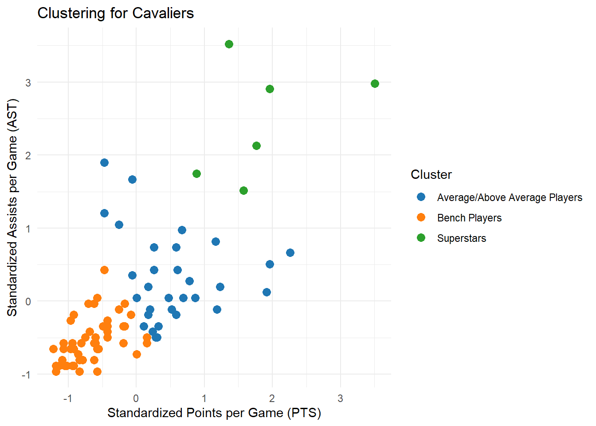

LeBron’s Teammates Clustering Analysis
Introduction
What makes a great teammate for LeBron James? Over a career spanning two decades, four championships, and stints with the Cavaliers, Heat, and Lakers, LeBron has played alongside a wide range of players—some who elevated his game, and others who struggled to make an impact. To explore patterns among his many teammates, I used k-means clustering to group players based on their average points and assists per game while playing with LeBron. I also separated players by team to see how their supporting casts differed across each era. This analysis reveals what types of players surrounded LeBron on each team, offering insights into which rosters were superstar-heavy and which required him to carry more of the load, highlighting just how dominant he was, even when the help was limited.
The K-means Analysis

Descriptions of each clustering group is provided below.
SuperStars: This cluster includes players with high points per game and high assists per game while playing with LeBron. Notably, LeBron played with only one superstar during his time with the Miami Heat. Yet, he won back-to-back NBA Championships, highlighting that this was likely when he was playing some of the best basketball of his career.
Average/Above Average Players: These players were essential pieces of the team. They put up consistent numbers each game, and LeBron could rely on these players to have an average performance each night. These players were key for playoff runs, and this group includes scorers and passers who benefited from LeBron being on the floor. Again, we can see that LeBron was not surrounded by many of these players in Miami, highlighting that he played arguably the best basketball of his career to carry this team to back-to-back championships.
Bench Players: This grouping of players had a limited impact on offensive production. Many of these players in this cluster were big men who rebounded the ball or role players known for their excellent defense and hustle. Some members of this group saw minimal playing time and were statistically below average by NBA standards. There impact may not have been seen on the court but they likely contributed to the team in other ways such as leadership, team chemistry, and work ethic
Table
The interactive table below allows you to search through all of LeBron’s teammates and see which players are in what cluster, as well as the team they played with LeBron and their points and assist averages.